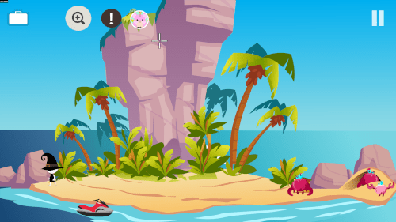
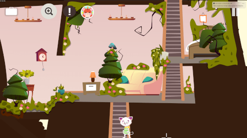
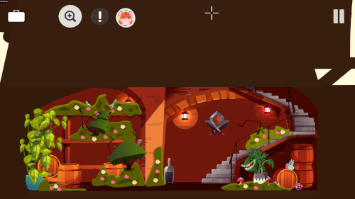

Tiny Story 4 – Mimy et la Sorcière des Fleurs
Une aventure magique vous attend ! Après avoir accidentellement brisé une précieuse fleur de verre, Mimy doit retrouver la mystérieuse Sorcière des Fleurs pour la réparer.
Explorez des lieux colorés, rencontrez des personnages étonnants et collectez les bons ingrédients pour créer la potion magique qui sauvera la fleur.
Le jeu a été conçu pour le tactile : touchez pour ramasser des objets, les utiliser ensemble ou interagir avec l’environnement, facilement et sans stress.
Si vous aimez les aventures mignonnes, douces et relaxantes, Tiny Story 4 vous offrira un moment chaleureux et plein de charme.
Amusant & attachant
Découvrez des quêtes pleines d’humour et personnalisez Mimy avec différents chapeaux, écharpes et robes.

Adapté au tactile
Ramassez, combinez et utilisez des objets simplement en touchant l’écran. Fluide et naturel sur mobile.

Besoin d’aide ?
Si vous êtes bloquée, suivez les vidéos de solution pas à pas pour avancer sereinement.
